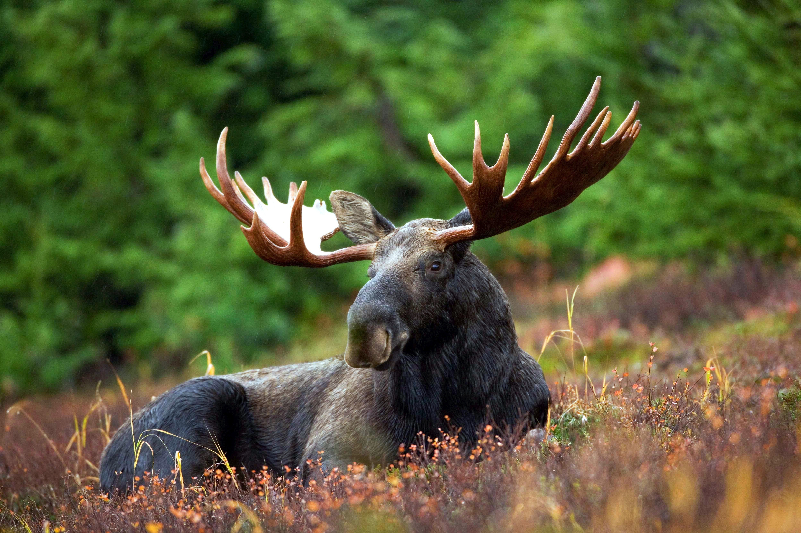

Chocolate Moose

Chocolate moose like you've never had before, ever!
This recipe is a well kept secret in the Canadian Wilderness, but we have crossed rivers of text and mountains of links to bring it today before you.
Courtesy of ThatBoobieGirl @food.com, even though she does not know it yet, I think.
Ingredients
- 1 moose
- 40 lbs hershey chocolate (18 kg for the rest of the world)
- 17 containers Cool Whip
- 1 cherry
Preparing the Moose
- Send spouse to Alaska to capture moose, or have one delivered by UPS.
- Meanwhile, melt chocolate in very large double boiler.
- Keep warm.
- Tie up moose with rope.
- Holding the moose by the tail, carefully dip in melted chocolate, covering it completely with a thin coating.
- Arrange moose attractively on large platter and refrigerate for 2 days to set chocolate.
- Remove rope, wash to remove chocolate,if necessary, and return rope to clothesline.
- Garnish chocolate moose with Cool Whip and top with a cherry.
- Serve immediately. Or you could just chew on the rope, which may be tastier.
May be doubled for serving a crowd.
Enjoy!